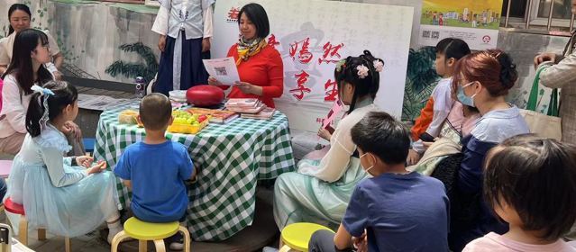

全民阅读

在这个信息爆炸的时代，阅读已经成为我们获取知识、增长见识的重要途径。它不仅仅是一种学习方式，更是一种心灵的旅行，一种思想的交流。本文将探讨阅读的重要性、阅读的乐趣以及如何培养良好的阅读习惯。
阅读是知识积累的关键。通过阅读，我们可以接触到不同的学科知识、历史事件、文化背景等，这些都极大地丰富了我们的视野。其次，阅读能够提高我们的思维能力。在阅读过程中，我们需要理解、分析和批判性思考，这有助于提升我们的逻辑思维和判断力。此外，阅读还能帮助我们建立世界观和价值观，通过不同作者的观点和故事，我们可以更加深入地理解人性和社会。
因此，科春社区在2015年开展全民阅读这个项目，旨在培養市民阅读爱好并提升整体市民素质。直至2024年已經举行了400到500场阅读活動。其中，有早教阅读，从小到大培養孩子阅读习惯。也有为学生举辨的科技阅读，一般在暑假举行，阅读书本后，公益老師会带领学生们看有关的展覽和制作相关的模。此外，还有党员阅读，带领党员们重温党的历史和理論并了解新的知識。也有为老年人举辨的养生阅读，了解一些保健操和养生知識。也有一些家長课堂，让学长了解阅读的重要性，从而积极地让孩子们参加阅读活動。 2019年，科春社区图书馆更被首都图书馆评为播撒幸福种子基地，荣获北京市10佳阅读示範社區。
要培养良好的阅读习惯，首先需要选择适合自己兴趣的书籍。这样可以增加阅读的动力和持续性。参加读书会或与朋友分享读书心得便一种很好的方式，它不仅能增加阅读的乐趣，还能拓宽我们的视野。
总之，阅读是一种美妙而有益的活动。它不仅能够让我们获得知识和智慧，还能丰富我们的精神世界。在这个快节奏的时代里，让我们放慢脚步，拿起一本书，在文字的世界里寻找属于自己的宁静与快乐吧。